Piezas de carrocería para GAC en Panamá
113 piezas disponibles hoy, cada una con su foto y su código: faros y lámparas delanteras (19), flares (18), covers de halógena (13), lámparas traseras (12).
- Garantía de 3 días
- Foto real de cada pieza
- Efectivo, Yappy o ACH
- Lunes a sábado, 8:00 a. m. a 5:00 p. m.
Por modelo
Faros y lámparas delanteras para GAC 19
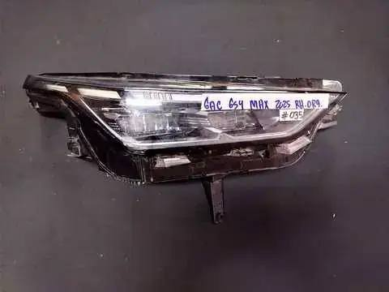
035GS4 Max2025 · lado derecho · original 036Emzoom2025 · lado derecho · original
036Emzoom2025 · lado derecho · original 038Emzoom2025 · lado izquierdo · original
038Emzoom2025 · lado izquierdo · original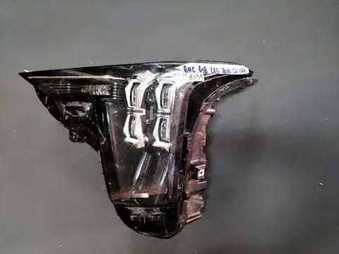
039GS82025 · lado izquierdo · original 040GS82025 · lado derecho · original
040GS82025 · lado derecho · original 041GS3 Power2021-26 · lado derecho · original
041GS3 Power2021-26 · lado derecho · original 042GS42022 · lado derecho · original
042GS42022 · lado derecho · original 043GS3 Power2021-26 · lado izquierdo · original
043GS3 Power2021-26 · lado izquierdo · original 044GS32017 · lado izquierdo · original
044GS32017 · lado izquierdo · original 045GS42022 · lado derecho · original
045GS42022 · lado derecho · original 048GS3 Power2021-26 · lado izquierdo · original
048GS3 Power2021-26 · lado izquierdo · original 049GS4 LED2022 · lado derecho · original
049GS4 LED2022 · lado derecho · original 050GS3 Power2021-26 · lado izquierdo · original
050GS3 Power2021-26 · lado izquierdo · original 051GS3 Power2021-26 · lado derecho · original
051GS3 Power2021-26 · lado derecho · original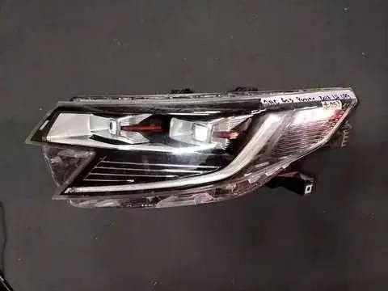
052GS3 Power2021-26 · lado izquierdo · original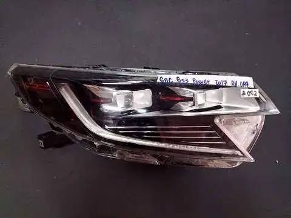
053GS3 Power2021-26 · lado derecho · original LD004GS4 Max2023-26 · lado derecho · original
LD004GS4 Max2023-26 · lado derecho · original LD005GS82018-2023 · lado derecho · original
LD005GS82018-2023 · lado derecho · original LD052GS8 Full LED2025 · lado izquierdo · original
LD052GS8 Full LED2025 · lado izquierdo · originalFlares para GAC 18
 FL003GS82025 · lado derecho · original
FL003GS82025 · lado derecho · original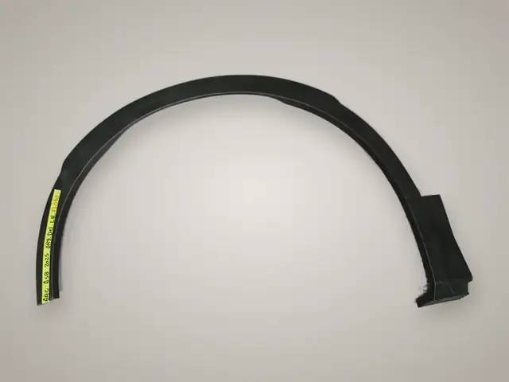
FL030GS82025 · lado izquierdo · original FL032Emzoom2023-25 · lado derecho · original
FL032Emzoom2023-25 · lado derecho · original FL033GS32021-23 · lado izquierdo · original
FL033GS32021-23 · lado izquierdo · original FL068GS32017 · lado izquierdo · original
FL068GS32017 · lado izquierdo · original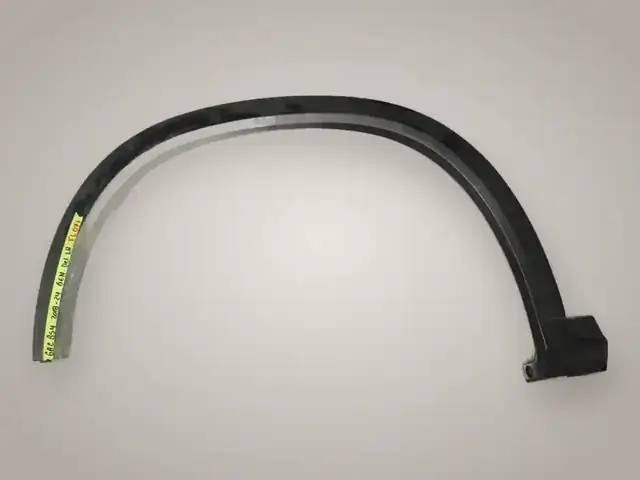
FL071GS42018-24 · lado izquierdo · genérico FL072GS42018-24 · lado izquierdo · genérico
FL072GS42018-24 · lado izquierdo · genérico FL074GS32017 · lado derecho · original
FL074GS32017 · lado derecho · original FL075GS32017 · lado derecho · original
FL075GS32017 · lado derecho · original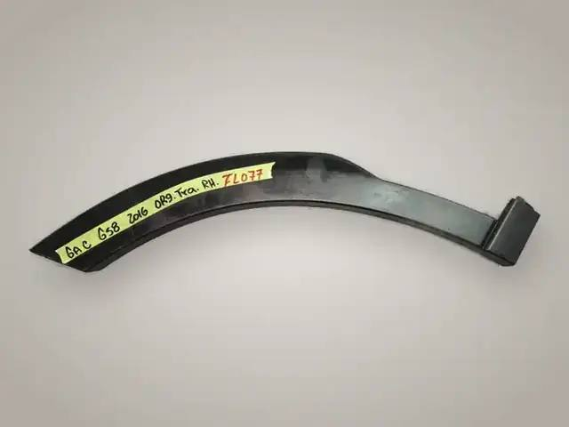
FL077GS82016 · lado derecho · original FL078GS82016 · lado izquierdo · original
FL078GS82016 · lado izquierdo · original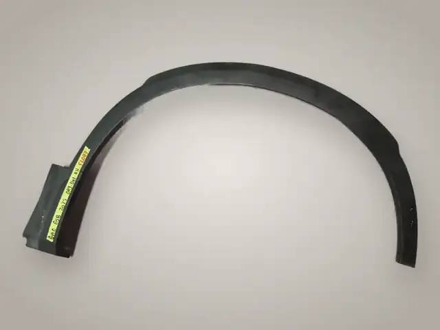
FL083GS82025 · lado derecho · original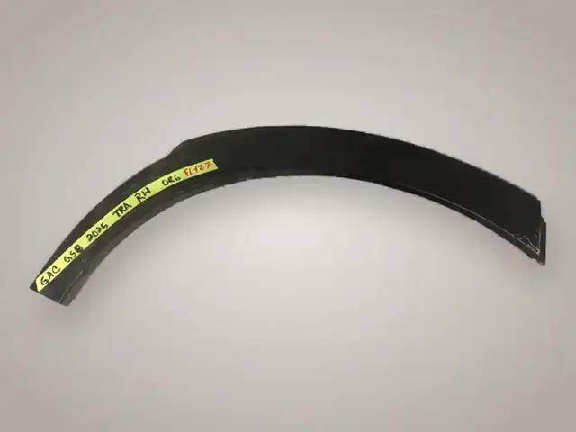
FL127GS82026 · lado derecho · original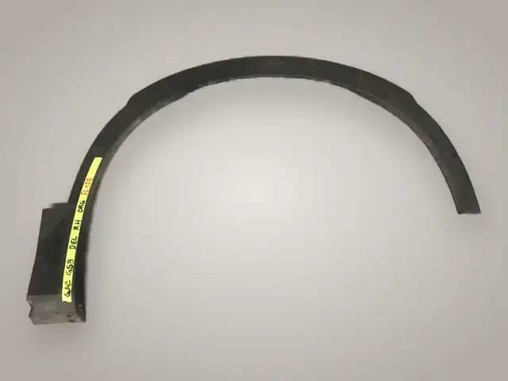
FL128GS82022-26 · lado derecho · original FL150GS82025 · lado derecho · original
FL150GS82025 · lado derecho · original FL125GS32020-25 · lado derecho · original
FL125GS32020-25 · lado derecho · original FL110GS82025 · lado derecho · original
FL110GS82025 · lado derecho · original FL116GS82022-26 · lado derecho · original
FL116GS82022-26 · lado derecho · originalCovers de halógena para GAC 13
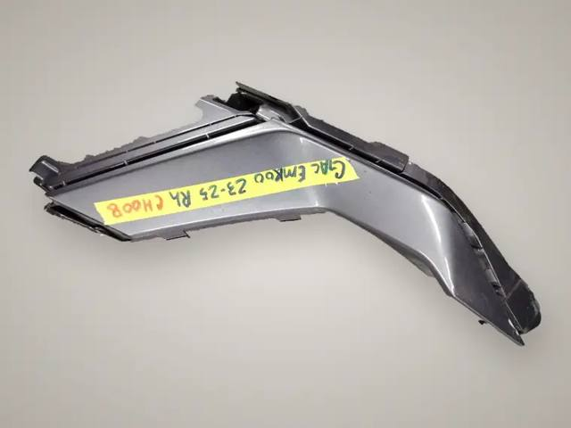
CH008Emkoo2023-25 · lado derecho · original CH029GS32020-23 · lado izquierdo · original
CH029GS32020-23 · lado izquierdo · original CH030GS32020-23 · lado derecho · original
CH030GS32020-23 · lado derecho · original CH045GS32024-26 · lado derecho · original
CH045GS32024-26 · lado derecho · original CH046GS32024-26 · lado izquierdo · original
CH046GS32024-26 · lado izquierdo · original CH073Emzoom2023-25 · lado derecho · original
CH073Emzoom2023-25 · lado derecho · original CH111GS42025-26 · lado derecho · original
CH111GS42025-26 · lado derecho · original CH120Emzoom2024 · lado derecho · original
CH120Emzoom2024 · lado derecho · original CH121GS32020-21 · lado izquierdo
CH121GS32020-21 · lado izquierdo CH123GS32021-22 · lado derecho · original
CH123GS32021-22 · lado derecho · original CH124GS32021-23 · lado izquierdo · original
CH124GS32021-23 · lado izquierdo · original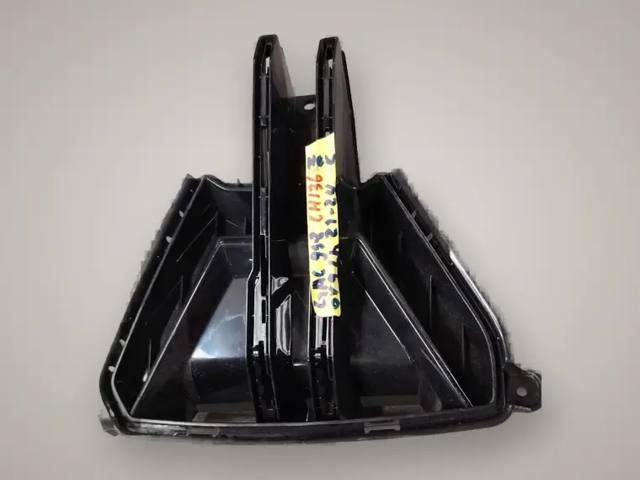
CH136GS82021-24 · lado izquierdo · original CH141Emkoo2023-25 · lado derecho · original
CH141Emkoo2023-25 · lado derecho · originalLámparas traseras para GAC 12
 307M62021-2023 · lado izquierdo · original
307M62021-2023 · lado izquierdo · original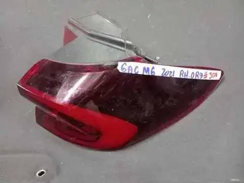
308M62021 · lado derecho · original 309GS32021-2022 · lado derecho · original3106582022 · lado izquierdo · original
309GS32021-2022 · lado derecho · original3106582022 · lado izquierdo · original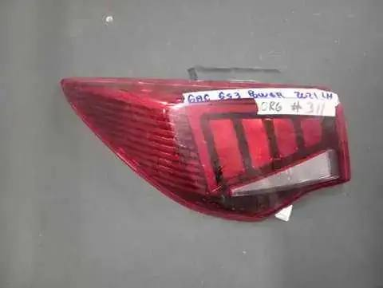
311GS3 Power2021-26 · lado izquierdo · original 312M62020 · lado derecho · original
312M62020 · lado derecho · original 313Emzoom2025 · lado izquierdo · original
313Emzoom2025 · lado izquierdo · original 314GS32017-20 · lado derecho · original
314GS32017-20 · lado derecho · original 315GS32017-2020 · lado izquierdo · original
315GS32017-2020 · lado izquierdo · original 3326582025 · lado izquierdo · original
3326582025 · lado izquierdo · original LT005GS42020-24 · original
LT005GS42020-24 · original LT038Emzoom2024-25 · lado izquierdo · original
LT038Emzoom2024-25 · lado izquierdo · originalRefuerzos delanteros para GAC 8
 R020GS3 Power2021-26 · original
R020GS3 Power2021-26 · original R021GS32023-26 · original nuevo
R021GS32023-26 · original nuevo R022GS82016-23 · original
R022GS82016-23 · original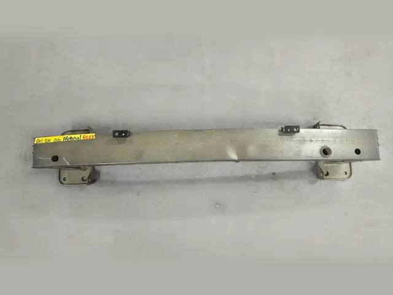
R023GS42020 · original R024GS32017-19 · original
R024GS32017-19 · original R056GS4 Power2022-23 · original
R056GS4 Power2022-23 · original R100Emzoom2022-26 · original
R100Emzoom2022-26 · original R105GS82023-26 · original
R105GS82023-26 · originalDefensas traseras para GAC 6
 DT196GS42024-25 · original
DT196GS42024-25 · original DT197GS82024 · original
DT197GS82024 · original DT198GS82024 · original
DT198GS82024 · original DT199GS32023 · original
DT199GS32023 · original DT200GS32023 · original
DT200GS32023 · original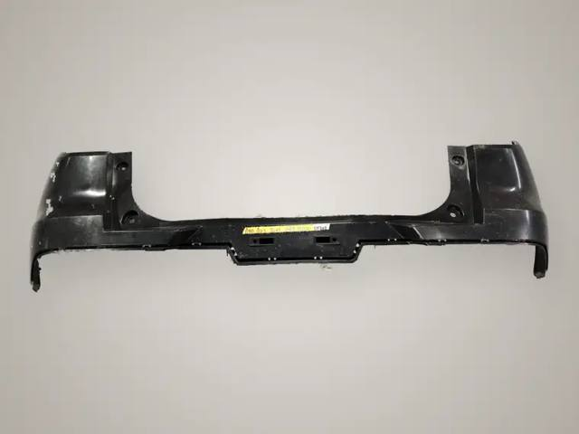
DT202GS32023 · original nuevoParrillas para GAC 4
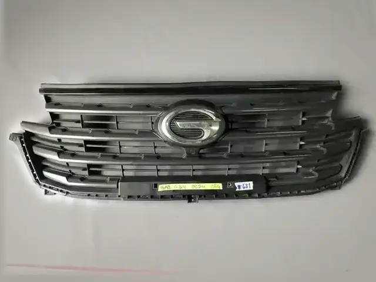
631GS42024 · original 632GS8 Trumpchi2016-23 · original
632GS8 Trumpchi2016-23 · original 633GS32017-20 · original
633GS32017-20 · original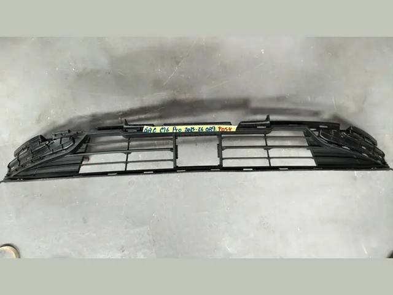
P054M6 Pro2025-26 · originalEstribos y rolling boards para GAC 4
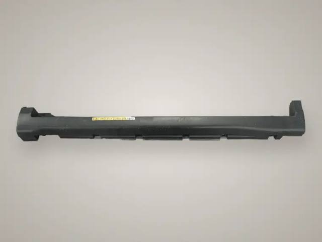
RB002GS32017 · lado izquierdo · original nuevo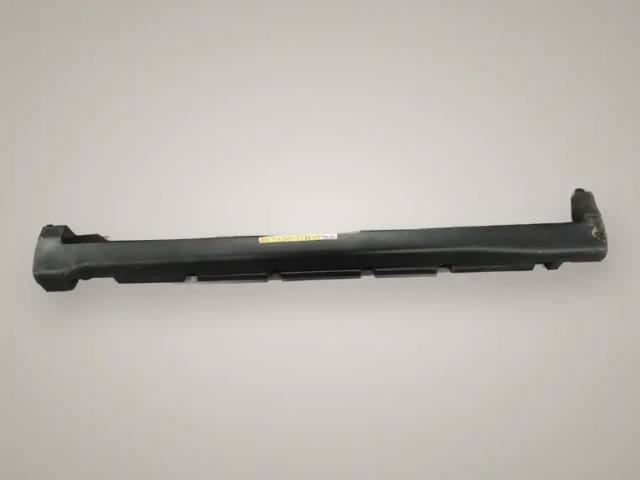
RB032GS32021-2023 · lado izquierdo · original RB033GS32019-2023 · lado derecho · original
RB033GS32019-2023 · lado derecho · original RB012GS32017 · lado derecho · original
RB012GS32017 · lado derecho · originalRetrovisores para GAC 3
 RV015Emzoom2026 · lado izquierdo · original
RV015Emzoom2026 · lado izquierdo · original RV030GS3 Power2021-26 · original
RV030GS3 Power2021-26 · original RV048Emzoom2023-26 · lado derecho · original
RV048Emzoom2023-26 · lado derecho · originalDefensas delanteras inferiores para GAC 3
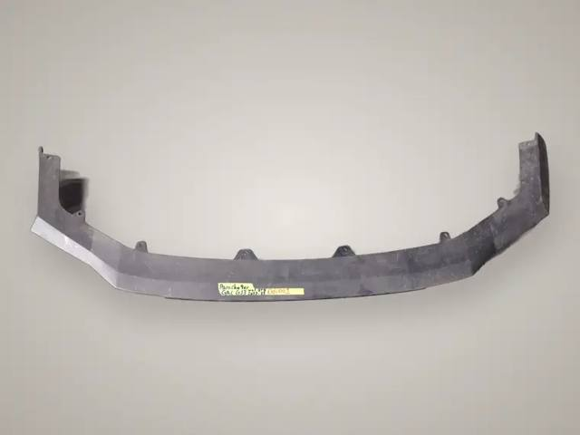
DDI001GS32019-23 · original DDI026GS3 Power2021-26 · original
DDI026GS3 Power2021-26 · original DDI003GS32017-23 · original
DDI003GS32017-23 · originalDefensas traseras inferiores para GAC 3
 DTI004GS3
DTI004GS3 DTI020GS4
DTI020GS4Extensiones de defensa delantera para GAC 3
 EDD001GS32021 · lado izquierdo · original
EDD001GS32021 · lado izquierdo · original EDD002GS32021 · lado derecho · original
EDD002GS32021 · lado derecho · original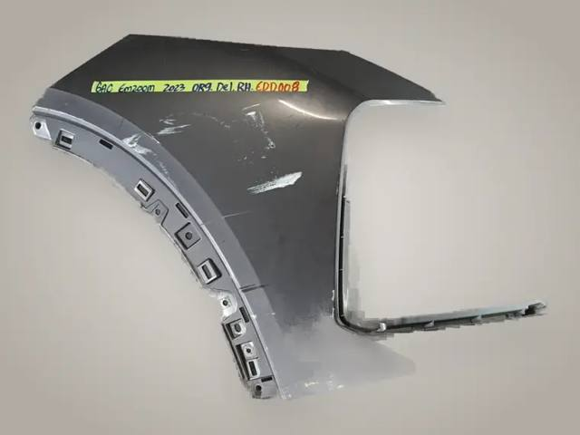
EDD008Emzoom2023 · lado derecho · originalCubrepolvos para GAC 2
 CP043GS3
CP043GS3Defensas delanteras para GAC 2
 927GS3
927GS3 928GS8
928GS8Marcos de radiador para GAC 2
 MR025Emkoo
MR025Emkoo MR026GS3 Trumpchi
MR026GS3 TrumpchiHalógenas y faros antiniebla para GAC 2
 HA046GS3 Power
HA046GS3 Power HA047GS3 Power
HA047GS3 PowerProtectores inferiores para GAC 2
 PCh021GS4 Power
PCh021GS4 PowerMolduras traseras para GAC 1
 MLT012Emzoom
MLT012EmzoomGuardafangos para GAC 1
 GF101GS3 Power
GF101GS3 PowerCapós para GAC 1
Tapas de baúl para GAC 1
Vidrios para GAC 1
Guardafangos traseros para GAC 1
Molduras de puerta para GAC 1
Otras marcas
ToyotaKIAHyundaiNissanSuzukiHondaBMWFordMitsubishiMercedes-BenzMazdaJeepChevroletForthingIsuzuVolkswagenBYDLexusAudiMiniCheryRAMFiatMaxusJaecooLincolnDFSKDodgeChanganMGSubaruPorschePeugeotAcuraInfinitiDongfengLand RoverHavalOmodaDaewooVolvoJMCUniversalGeelyGwmJACGMCOpelCadillacScionRenaultKaiyiDaihatsuKarryInternationalJaguarFaw